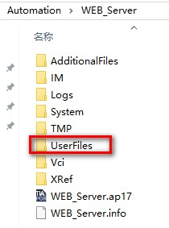
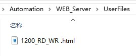
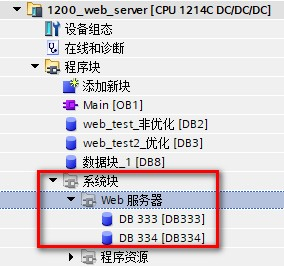

在 Web 服务器，用户自定义页面中进行配置，如图 1 所示。
 注意：添加用户自定义页面的前提是已经配置 Web 服务器相关参数。有关 Web 服务器配置，请参考配置文档。
注意：添加用户自定义页面的前提是已经配置 Web 服务器相关参数。有关 Web 服务器配置，请参考配置文档。

图 1.组态用户自定义页面
图中标注 1 处
在 HTML 目录处选择编辑好的 HTML 文件存放的路径，如图 2 和图 3 所示。
默认 HTML 页面中浏览并选中编辑好的 HTML 文件，HTML 文件见图 3。
应用程序名称填写编辑好的 HTML 文件的文件名称，HTML 文件见图 3。

图 2.HTML 文件存储路径

图 3.HTML 文件
图中标注 2 处
单击"生成块"(Generate blocks) 按钮时，TIA Portal 会基于指定的 HTML 源目录下的 HTML 页面生成数据块，以及一个用于 Web 页面操作的控制数据块。可以根据应用的需要设置这些属性。TIA Portal 还会生成一组片段数据块，以保存所有 HTML 页面的显示。 在生成数据块时，TIA Portal 会更新属性，以显示控制数据块编号和首个片段数据块编号，编号的定义，见图中标注 3 处。
生成该数据块之后，用户定义的 Web 页面就会成为程序的一部分。与这些页面对应的块会出现在项目导航树中"程序块"(Program blocks) 下"系统块"(System blocks) 文件夹中的"Web 服务器"(Web server) 文件夹中，如图 4 所示。

图 4.生成DB块